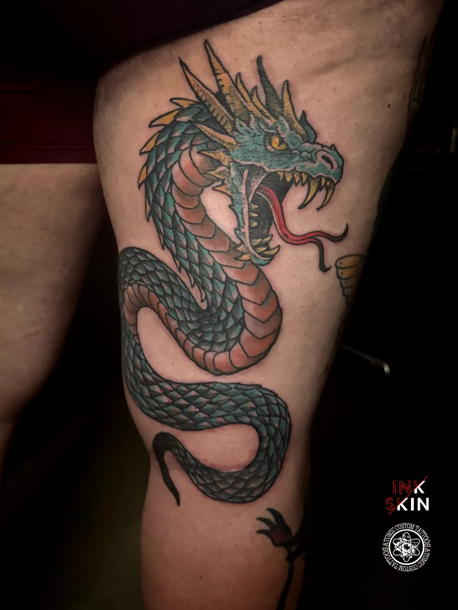
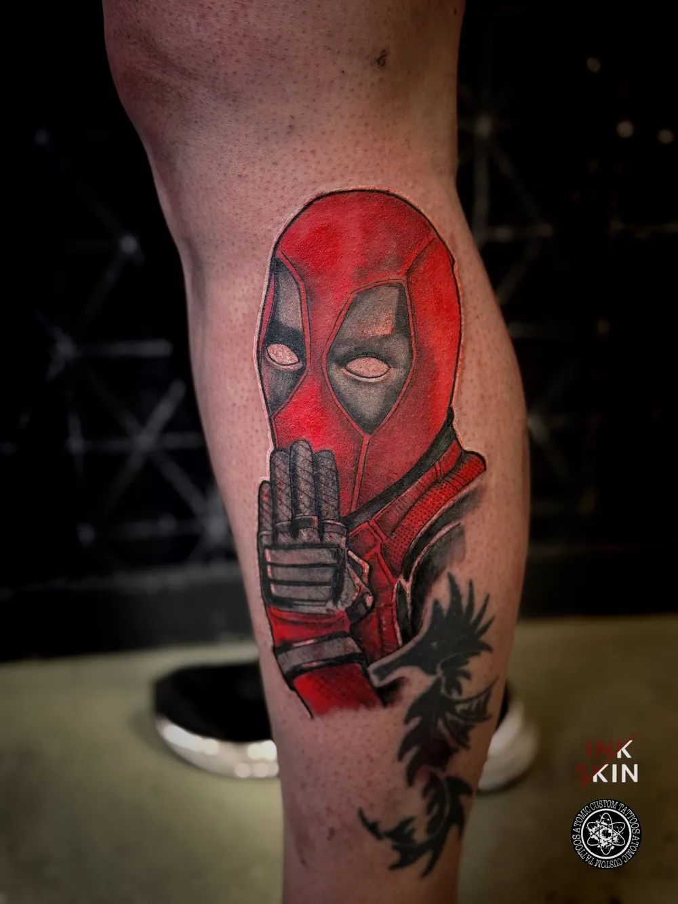
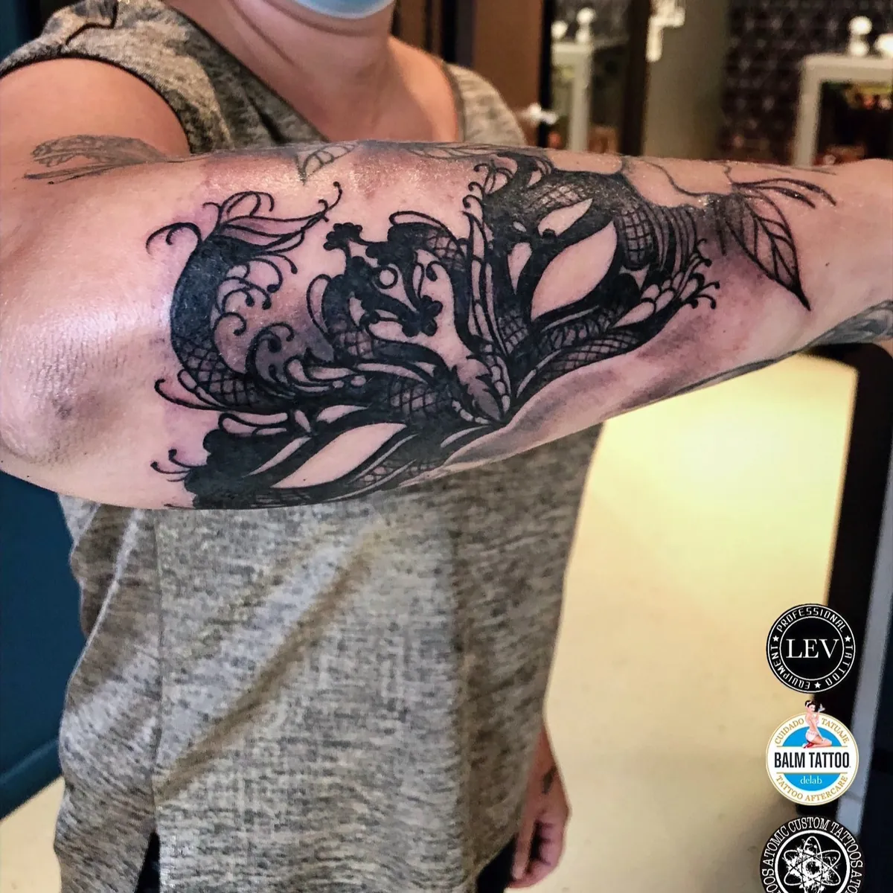
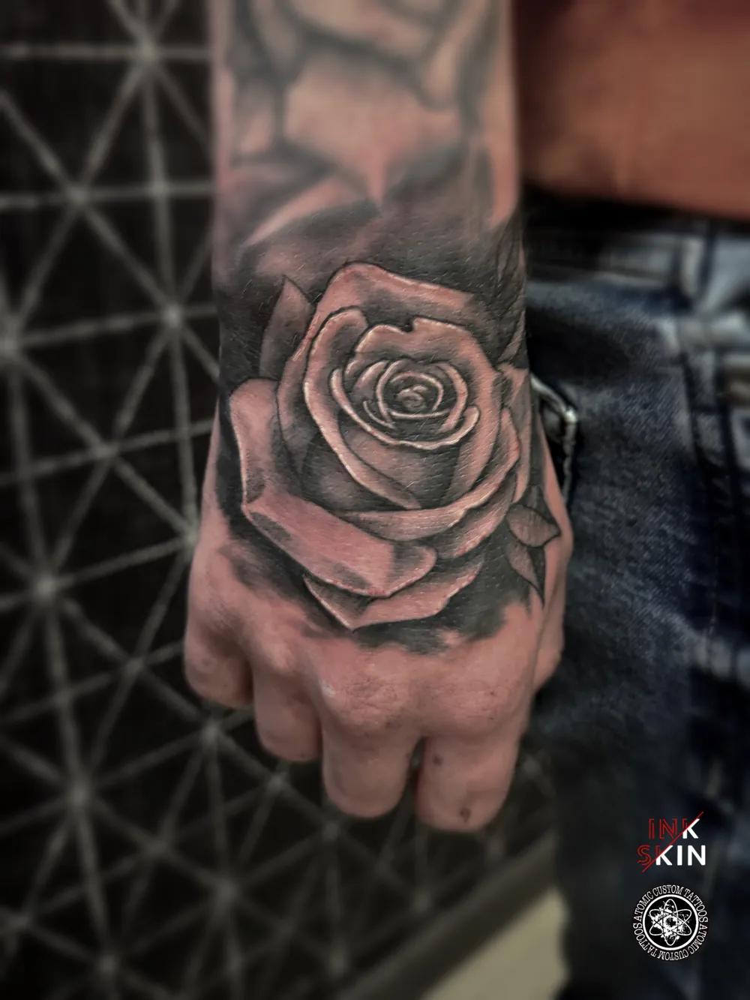
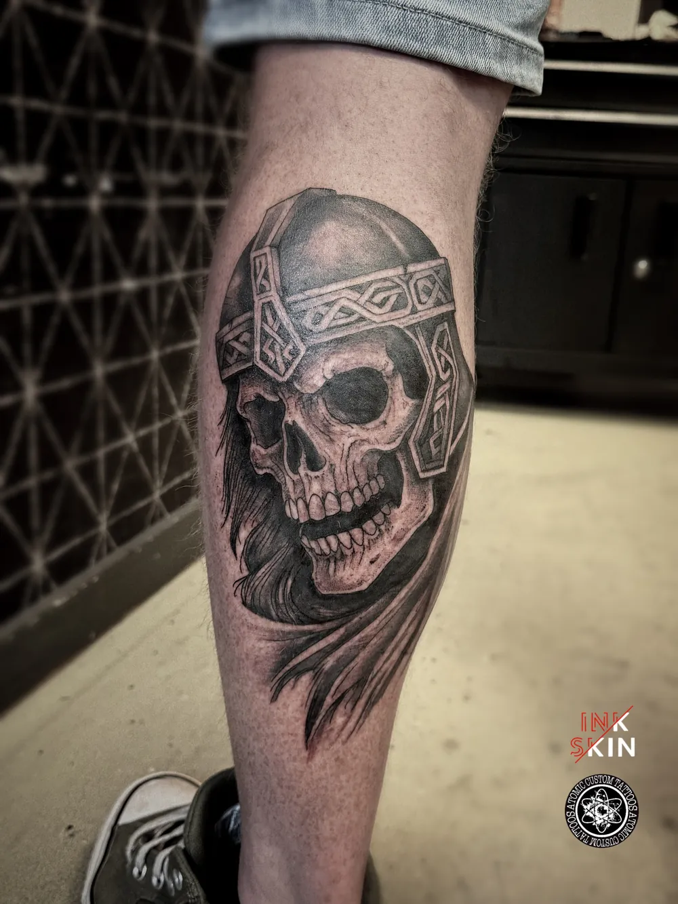
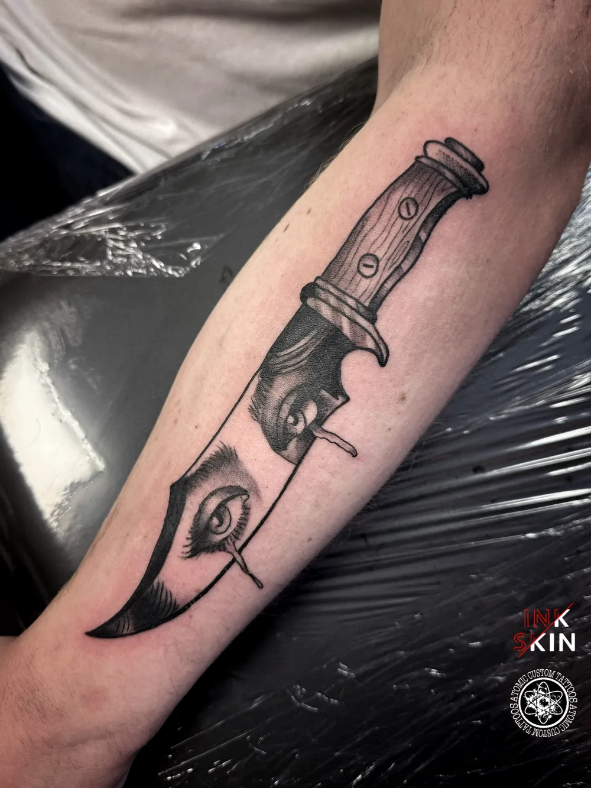
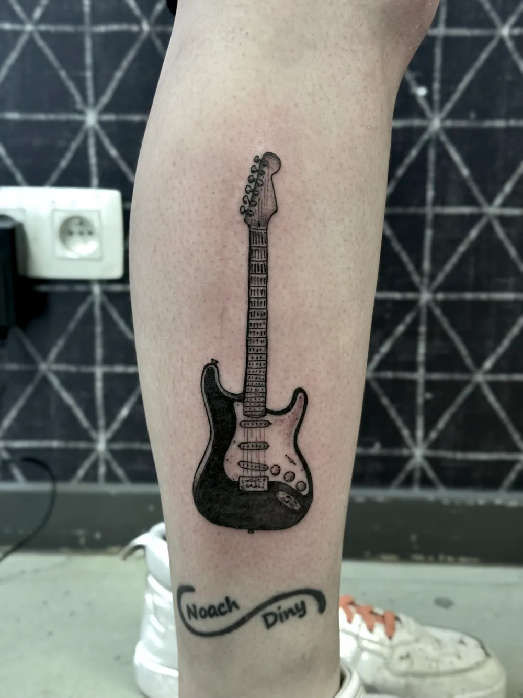
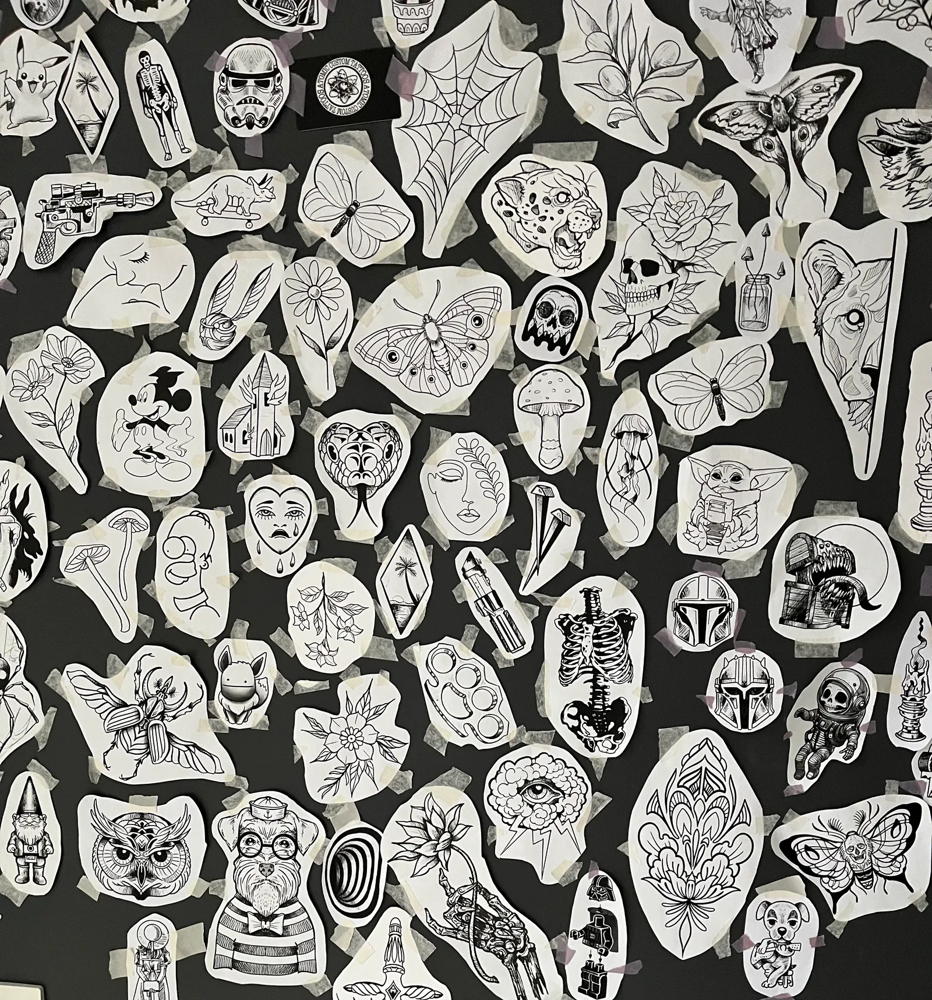

Black & grey
Portretten en realistische stukken met zachte schaduw en veel diepte.

Elke tattoo bij Atomic tekent Tom met de hand, op maat van je huid en de plek waar hij komt. Felle kleur, zacht black and grey of een oude tattoo die beter kan: kom maar af met je idee.
Elk ontwerp 100% met de hand getekend
Bij Atomic ga je niet van hand naar hand. Tom Maassen tekent je ontwerp en zet het zelf. Hij komt uit de grafische en beeldende hoek, en dat zie je aan hoe een tattoo op je lijf valt.
Voor hij één lijn zet, kijkt hij naar je huidtype en je bouw. Een oude tattoo waar je niet blij mee bent? Bijwerken en coveren doet hij met plezier.

Tom zit niet vast aan één stijl. Kies er eentje, of laat hem mengen tot iets dat alleen jij draagt.
Vervaagd, scheef of gewoon niet meer jouw ding. Stuur een foto, dan zegt Tom eerlijk wat er nog kan.
Stuur een fotoPortretten en realistische stukken met zachte schaduw en veel diepte.

Maskers, draken en golven, groot opgezet en vol karakter.

Felle kleuren die blijven staan, van je favoriete held tot een eigen figuur.

Puntje per puntje opgebouwd, voor patronen en diepe zwarte vlakken.
Een greep uit wat Tom de voorbije tijd tekende en zette. Elk stuk één keer gemaakt, voor één persoon.




Nieuwe stukken en verse flash komen eerst op Instagram.
"Ik kwam binnen met het idee: “Gewoon eentje.” Tom zei niets. Achteraf gezien had dat een waarschuwing moeten zijn. Een schouder en bijna een volledig been later besef ik dat “gewoon eentje” bij Tom blijkbaar niet bestaat. Hij levert elke keer topwerk, denkt echt mee over je ontwerp en is pas tevreden als alles perfect zit."
"Je komt binnen met een vaag idee, een gevoel, misschien zelfs alleen een paar losse gedachten… en hij weet daar iets visueels van te maken dat beter klopt dan wat je zelf ooit had kunnen bedenken. Al jaren vaste klant bij Tom! Tom = Top!"
"Al 2 tattoos laten zetten door Tom en zeer tevreden! Geeft heel goed advies, staat open voor jouw mening en zorgt er ook voor dat je de nodige info rond aftercare weet. Plus, ook gewoon altijd een fijne babbel."

Daar hangt Toms flash-muur: ontwerpen die hij op voorhand tekende, van schattig tot duister en creepy. Handig als je nog twijfelt, of als je midden in een groot project eens zin hebt in iets kleins.
Een foto, een schets of een paar woorden is genoeg om te starten. Stuur het door, Tom laat je zo snel mogelijk iets weten.
Ik maakte deze demo voor u om te tonen wat er kan. Na een kort gesprek maak ik er iets veel persoonlijkers van, helemaal naar uw wens.
Vrijblijvend. Ik kom langs of we bellen.
Op maat, op uw eigen domein.
Geen voorschot. U betaalt pas als alles klaar is.
Hosting, domeinnaam en kleine wijzigingen, zoals nieuwe openingsuren.
Omdat een voorbeeld meer zegt dan een mail. Zo ziet u meteen wat er kan, en het kost u niets.
Nee. Het gesprek is vrijblijvend. Vindt u het niks, dan is het daarmee gedaan.
Na ons gesprek staat uw site binnen 10 tot 14 dagen online.
Zeker. Uw domeinnaam kan gewoon blijven, de nieuwe site komt in de plaats van de oude.
Nee, dat doe ik op basis van ons gesprek. Eigen foto's zijn mooi meegenomen, maar niet nodig om te starten.